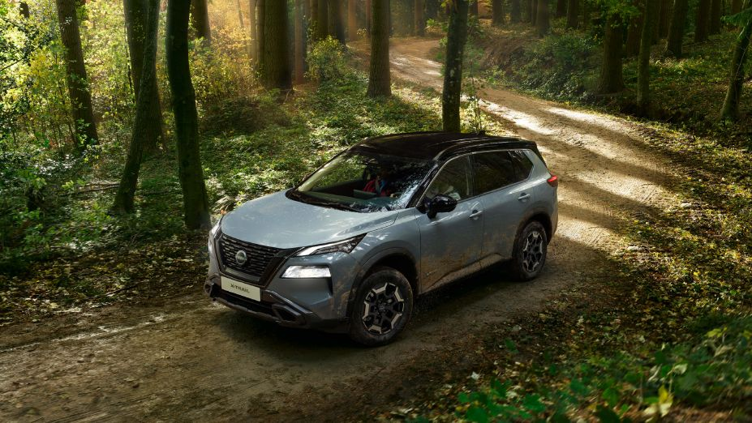
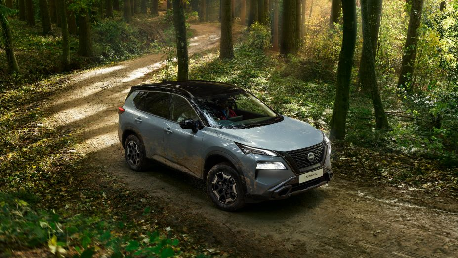

Naujasis Nissan X-Trail × Fakto Auto
Test ad storyboard v2 · 30 s · 16:9 1920×1080 · LT voiceover · no price
Outside the real showroom, 20 min after sunset. A slow walk toward the lit glass; the X-Trail glows inside. No text, just a low pulse.
VO: —

NaujasisNissan X-Trail
You film
Inside, phone low by the front bumper. The headlights and DRLs switch on, with a soft light hit in the music. The title rises in.
VO: „Pažiūrėkite iš naujo."

You filmOne full circle at an even distance, at headlight height. I stabilise it and speed-ramp it. Red callout lines draw on as each part passes.
VO: „Naujas veidas. Tas pats tvirtas charakteris."
Grotelės
Žibintas
Ratas
Google ekranas
(you film it on)Google
(you film it on)Google
N-Trek salonas
(you film it)Salonas
(you film it)Salonas
Five 1-second macro slides joined by whip/flash cuts. On-screen labels: Google integruota · ProPilot · e-POWER. The screen is real, never a drawn UI.
VO: „Google jau viduje. ProPilot — šalia jūsų kelyje."
e-POWER
Film + official
The car pulls off the Fakto forecourt and past the camera, then cuts to the forest road: a slow parallax move on the official photo, or your tracking shot (a passenger films).
VO: „Elektrinis važiavimo pojūtis. Be įkrovimo rūpesčių."
Atvykite pamatyti
Naujasis Nissan X-Trail jau Fakto Auto · faktoauto.lt
WLTP: degalų sąnaudos [—] l/100 km, CO₂ [—] g/km. Nuotraukos iliustracinės.
Car darkened behind the type, then logos, the address and the WLTP line, which is legally required in EU car ads. Motion graphic rendered here.
VO: „Naujasis Nissan X-Trail. Jau Fakto Auto."